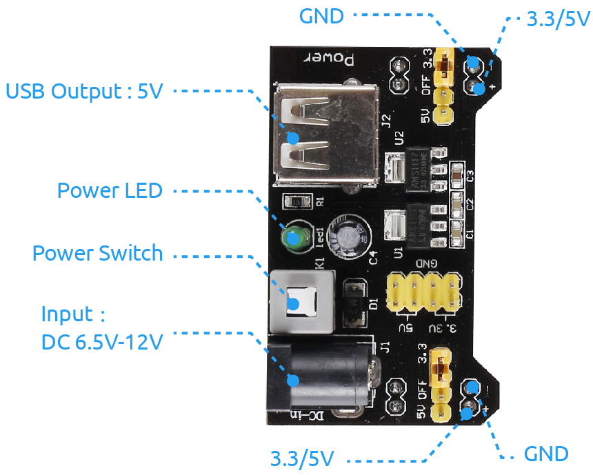
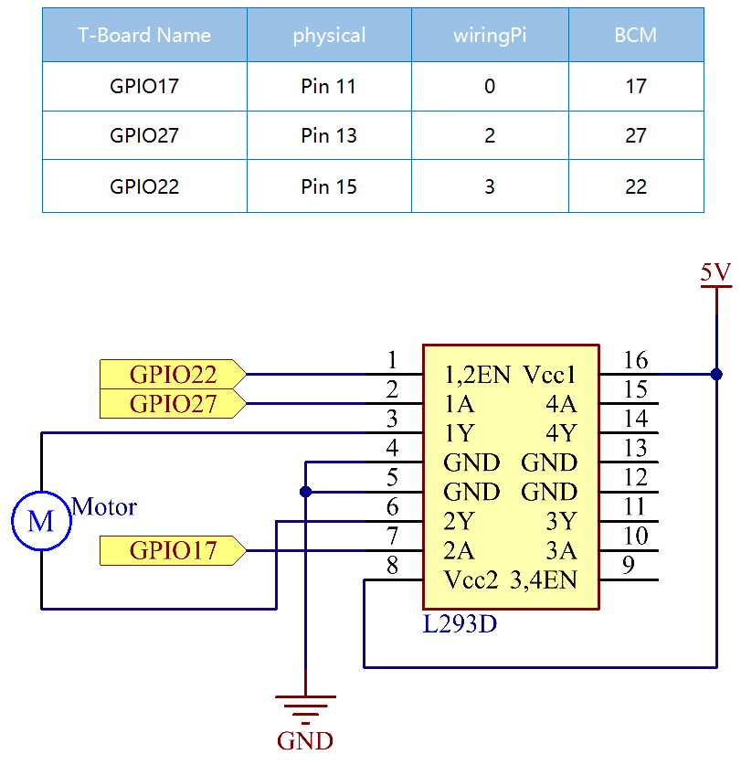

Nota
¡Hola! Bienvenido a la Comunidad de Entusiastas de SunFounder Raspberry Pi, Arduino y ESP32 en Facebook. Profundiza en Raspberry Pi, Arduino y ESP32 junto a otros entusiastas.
¿Por qué unirse?
Soporte Experto: Resuelve problemas post-venta y desafíos técnicos con la ayuda de nuestra comunidad y equipo.
Aprender y Compartir: Intercambia consejos y tutoriales para mejorar tus habilidades.
Avances Exclusivos: Accede anticipadamente a anuncios de nuevos productos y avances.
Descuentos Especiales: Disfruta de descuentos exclusivos en nuestros productos más nuevos.
Promociones Festivas y Sorteos: Participa en sorteos y promociones navideñas.
👉 ¿Listo para explorar y crear con nosotros? Haz clic en [Aquí] y únete hoy!
1.3.1 Motor
Introducción
En esta lección, aprenderemos a utilizar el L293D para accionar un motor de corriente continua y hacerlo girar en sentido horario y antihorario. Dado que el motor de corriente continua necesita una corriente mayor, utilizaremos el módulo de alimentación para alimentar los motores por razones de seguridad.
Componentes

Principio
L293D
El L293D es un controlador de motor de 4 canales integrado en un chip que soporta alta tensión y alta corriente. Está diseñado para conectarse a niveles lógicos estándar DTL y TTL, y para accionar cargas inductivas (como bobinas de relé, motores de CC, motores paso a paso) y transistores de conmutación de potencia, entre otros. Los motores de corriente continua son dispositivos que convierten la energía eléctrica en corriente continua en energía mecánica. Se utilizan ampliamente en accionamientos eléctricos debido a su excelente rendimiento en la regulación de velocidad.
A continuación se muestra la figura de los pines. El L293D tiene dos pines (Vcc1 y Vcc2) para la alimentación. Vcc2 se utiliza para alimentar el motor, mientras que Vcc1 alimenta el chip. Dado que aquí se utiliza un motor de corriente continua de pequeño tamaño, conectaremos ambos pines a +5V.

La siguiente figura muestra la estructura interna del L293D. El pin EN es un pin de habilitación que solo funciona con un nivel alto; A representa la entrada y Y la salida. Puedes ver la relación entre ellos en la parte inferior derecha. Cuando el pin EN está en nivel alto, si A está en alto, Y saldrá en nivel alto; si A está en bajo, Y saldrá en bajo. Cuando el pin EN está en bajo, el L293D no funcionará.

Motor de Corriente Continua

Este es un motor de CC de 5V. Girará cuando se le dé a los dos terminales de la placa de cobre un nivel alto y uno bajo. Para mayor comodidad, puedes soldar los pines al motor.

Módulo de Alimentación
En este experimento, se necesita una gran corriente para accionar el motor, especialmente al iniciar y detener, lo que interferirá severamente con el funcionamiento normal de la Raspberry Pi. Por lo tanto, alimentaremos el motor por separado con este módulo para que funcione de manera segura y estable.
Puedes simplemente conectarlo en la placa de pruebas para suministrar energía. Proporciona voltajes de 3.3V y 5V, y puedes conectar cualquiera de ellos a través de un capuchón de puente incluido.
Diagrama Esquemático
Conecta el módulo de alimentación en la placa de pruebas e inserta el capuchón de puente en el pin de 5V, luego saldrá un voltaje de 5V. Conecta el pin 1 del L293D a GPIO22 y configúralo en nivel alto. Conecta el pin 2 a GPIO27 y el pin 7 a GPIO17, luego establece un pin en alto y el otro en bajo. De esta manera, puedes cambiar la dirección de rotación del motor.
Procedimientos Experimentales
Paso 1: Construir el circuito.

Nota
El módulo de alimentación puede usar una batería de 9V con el conector de batería de 9V incluido en el kit. Inserta el capuchón de puente del módulo de alimentación en las tiras de bus de 5V de la placa de pruebas.

Paso 2: Acceder a la carpeta del código.
cd ~/davinci-kit-for-raspberry-pi/c/1.3.1/
Paso 3: Compilar.
gcc 1.3.1_Motor.c -lwiringPi
Paso 4: Ejecutar el archivo ejecutable.
sudo ./a.out
Al ejecutar el código, el motor primero girará en sentido horario durante 5 segundos, luego se detendrá durante 5 segundos, después girará en sentido antihorario durante 5 segundos; posteriormente, el motor se detendrá durante 5 segundos. Esta serie de acciones se repetirá.
Nota
Si no funciona después de ejecutarlo, o aparece un mensaje de error: "wiringPi.h: No such file or directory", consulta c code is not working?.
Código
#include <wiringPi.h>
#include <stdio.h>
#define MotorPin1 0
#define MotorPin2 2
#define MotorEnable 3
int main(void){
int i;
if(wiringPiSetup() == -1){ //si la inicialización de wiring falla, imprime un mensaje en pantalla
printf("setup wiringPi failed !");
return 1;
}
pinMode(MotorPin1, OUTPUT);
pinMode(MotorPin2, OUTPUT);
pinMode(MotorEnable, OUTPUT);
while(1){
printf("Clockwise\n");
delay(100);
digitalWrite(MotorEnable, HIGH);
digitalWrite(MotorPin1, HIGH);
digitalWrite(MotorPin2, LOW);
for(i=0;i<3;i++){
delay(1000);
}
printf("Stop\n");
delay(100);
digitalWrite(MotorEnable, LOW);
for(i=0;i<3;i++){
delay(1000);
}
printf("Anti-clockwise\n");
delay(100);
digitalWrite(MotorEnable, HIGH);
digitalWrite(MotorPin1, LOW);
digitalWrite(MotorPin2, HIGH);
for(i=0;i<3;i++){
delay(1000);
}
printf("Stop\n");
delay(100);
digitalWrite(MotorEnable, LOW);
for(i=0;i<3;i++){
delay(1000);
}
}
return 0;
}
Explicación del Código
digitalWrite(MotorEnable, HIGH);
Habilita el L239D.
digitalWrite(MotorPin1, HIGH);
digitalWrite(MotorPin2, LOW);
Establece un nivel alto para 2A (pin 7); dado que 1,2EN (pin 1) está en nivel alto, 2Y saldrá en nivel alto.
Establece un nivel bajo para 1A, luego 1Y saldrá en nivel bajo, y el motor girará.
for(i=0;i<3;i++){
delay(1000);
}
Este bucle retrasa durante 3*1000 ms.
digitalWrite(MotorEnable, LOW)
Si 1,2EN (pin 1) está en nivel bajo, el L293D no funcionará. El motor deja de girar.
digitalWrite(MotorPin1, LOW)
digitalWrite(MotorPin2, HIGH)
Invierte el flujo de corriente del motor, luego el motor girará en sentido inverso.